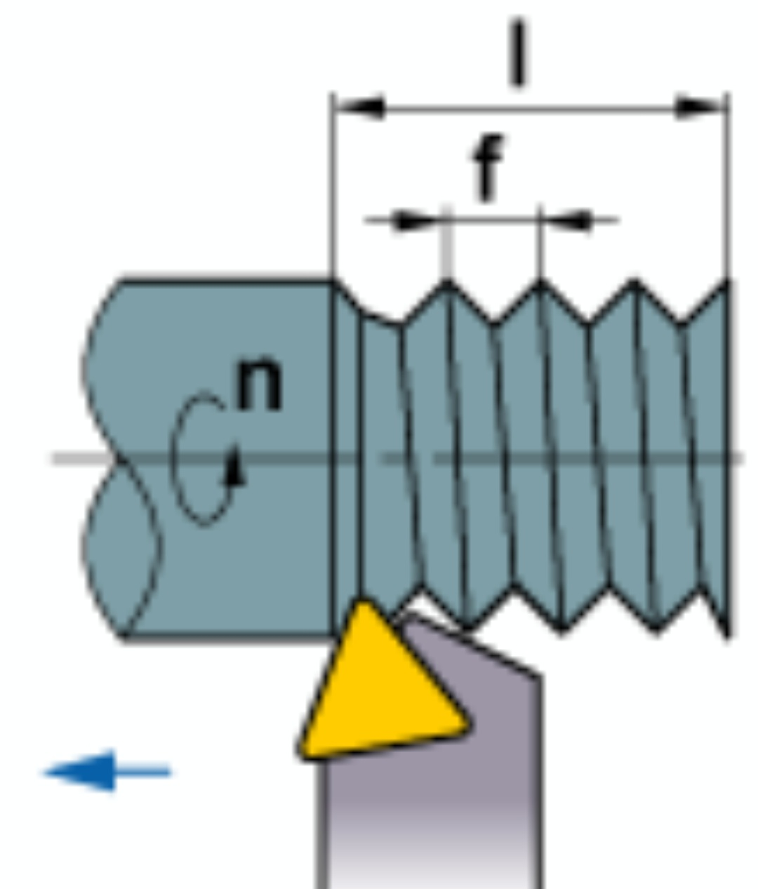

Turning Feed Rate Calculator
Rev: 001

\[ f = \frac{l}{n} \, (mm/rev) \]
f : Feed Rate (mm/rev)
l : Length of Cut (mm/min)
n : Spindle Revolutions (rev/min)
Calculate l
mm/min
Calculate n
rev/min
Calculate f
mm/rev
Calculate
* This calculator is for reference only. Actual results may vary based on cutting conditions.